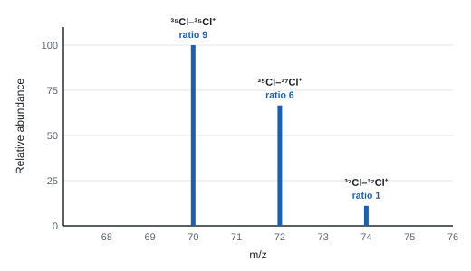
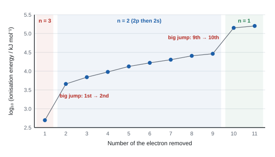
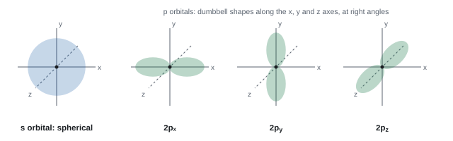
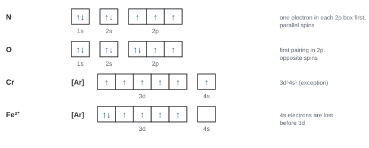
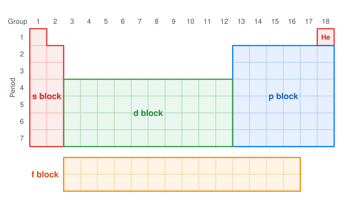
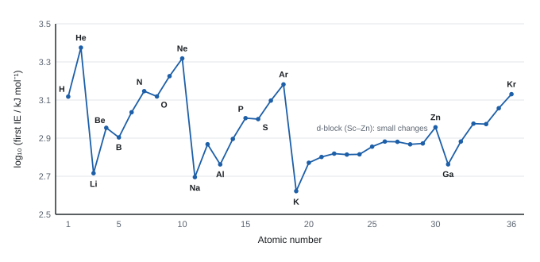
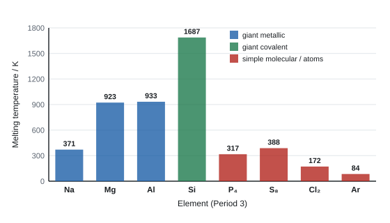
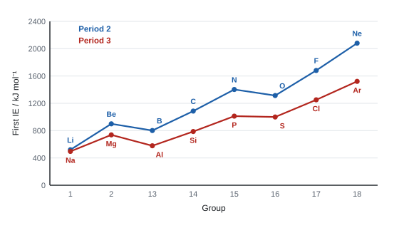

Atomic structure and the periodic table
Everything about how an element behaves comes from the arrangement of electrons around its nucleus. This topic starts with the particles inside an atom and the mass spectrometer that weighs them, then uses ionisation energies as the experimental evidence for shells, sub-shells and orbitals. It finishes by explaining the repeating patterns, or periodicity, across the periodic table.
Spec2.1The structure of an atom
Know that an atom is made of protons, neutrons and electrons, and where each is found.
- An atom has a tiny, dense, positively charged nucleus at its centre, containing protons and neutrons (together called nucleons).
- Electrons occupy the space around the nucleus, arranged in shells (energy levels), which are split into sub-shells and orbitals (2.9).
- Almost all the mass is in the nucleus; almost all the volume is the space where the electrons are. The nucleus is roughly 10⁻⁵ times the diameter of the atom.
- An atom is neutral because it has equal numbers of protons and electrons.
Use the right word for where electrons are: "shell" (energy level, n = 1, 2, 3…), "sub-shell" (s, p, d), "orbital" (a region holding up to 2 electrons). Examiners don't treat them as the same.
- "Protons and neutrons in the nucleus; electrons in shells / energy levels around it."
- Electrons are not in the nucleus: the nucleon count is protons + neutrons only.
Often asked as: part of a 2.4 counting question, or an MCQ on where most of the mass is.
Counting electrons as nucleons. Describing electrons as moving in fixed circular "orbits" when the question asks about orbitals.
Spec2.2Relative mass and charge of protons, neutrons and electrons
Know the relative masses and relative charges of the three sub-atomic particles.
| Particle | Where | Relative mass | Relative charge |
|---|---|---|---|
| proton | nucleus | 1 | +1 |
| neutron | nucleus | 1 | 0 |
| electron | shells around the nucleus | 1/1836 (about 0.0005, "negligible") | −1 |
- Protons and neutrons have almost the same mass; an electron is about 1/1840 of a proton.
- Use relative values in answers. (Actual values, such as 1.60 × 10⁻¹⁹ C for the charge, aren't needed.)
- Electron mass "1/1836" or "1/1840" or "negligible"; charge "−1" (a minus sign is needed). Proton +1, neutron 0.
Often asked as: complete the table; MCQ on which particle is deflected most (lightest) or not at all (neutral).
Giving the electron's relative mass as 0, or its charge without the minus sign.
Spec2.3Atomic (proton) number and mass number
Know what atomic (proton) number and mass number mean.
- Atomic number (proton number), Z: the number of protons in the nucleus. It defines the element: every atom of carbon has 6 protons.
- Mass number (nucleon number), A: the total number of protons + neutrons in the nucleus.
- Nuclide notation: the mass number goes top left and the atomic number bottom left, e.g. 2311Na. Often only the mass number is written: ²³Na, sodium-23.
- The Periodic Table lists elements in order of atomic number.
- Atomic number = "number of protons (in the nucleus of an atom)". Mass number = "number of protons plus neutrons".
Often asked as: part of 2.4 and 2.5 questions; MCQs comparing species.
Saying atomic number is "the number of electrons": that's only true for a neutral atom. Writing the mass number when the question asks for the number of neutrons.
Spec2.4Working out the particles in an atom or ion
Use atomic number and mass number to find the number of protons, neutrons and electrons in an atom or ion.
- Protons = Z.
- Neutrons = A − Z.
- Electrons = Z − (charge): a positive ion has lost electrons; a negative ion has gained them.
Worked example: counting particles
| Species | Protons | Neutrons | Electrons |
|---|---|---|---|
| ²⁵Mg | 12 | 25 − 12 = 13 | 12 |
| ²⁵Mg²⁺ | 12 | 13 | 12 − 2 = 10 |
| ³⁵Cl⁻ | 17 | 35 − 17 = 18 | 17 + 1 = 18 |
| ⁵⁶Fe³⁺ | 26 | 30 | 23 |
| ¹⁸O²⁻ | 8 | 10 | 10 |
Species with the same number of electrons are isoelectronic: Na⁺, Mg²⁺, F⁻ and O²⁻ all have 10 (3.7).
- Give the three numbers, labelled. A mass or atomic number in place of a particle count scores nothing.
Often asked as: complete a table for an atom and its ion; MCQ "which ion is not isoelectronic with the others?" (P³⁻, Cl⁻ and Ca²⁺ have 18 electrons; Ti³⁺ has 22 − 3 = 19).
Changing the number of protons when an ion forms: only electrons change. Adding electrons for a positive ion. Using the wrong isotope's mass number.
Spec2.5Isotopes
Understand what isotopes are.
- Isotopes are atoms of the same element with the same number of protons but different numbers of neutrons (so different mass numbers).
- Example: chlorine-35 (17 p, 18 n) and chlorine-37 (17 p, 20 n). Hydrogen has three: ¹H (no neutrons), ²H (deuterium, 1 neutron) and ³H (tritium, 2 neutrons).
Same chemistry, different physical properties
- Isotopes of an element have the same electronic configuration, so they react in the same way. Chemical reactions involve electrons, not neutrons.
- They have different masses, so physical properties that depend on mass differ slightly: density, rate of diffusion, melting and boiling points of their compounds, and how far they are deflected in a mass spectrometer (2.6).
- Isotope: "atoms of the same element with the same number of protons but different numbers of neutrons". The word number must be there. Electrons can be ignored if they equal the protons.
- "Same element" on its own does not replace "same number of protons".
- Same chemical reactions because they have the "same electronic configuration". "Same number of electrons" or "same outer electrons" did not score.
- In a mass spectrometer: different mass → different deflection (both halves needed).
Often asked as: define isotope; give a similarity and a difference between two isotopes; explain why isotopes react identically.
Writing "same protons, different neutrons" without "number of". Saying isotopes have "different numbers of electrons" or "different chemical properties".
Atoms of different elements with the same mass number (e.g. germanium-76 and selenium-76): same number of nucleons but different numbers of protons, so they are different elements, not isotopes (WCH11 Jan 2025).
Spec2.6The mass spectrometer and interpreting mass spectra
Know the basic principles of a mass spectrometer and use mass spectra to: (i) find the isotopic composition of an element; (ii) calculate Ar from isotope abundances and vice versa; (iii) find the Mr of a molecule and identify it; (iv) understand that some ions have a 2+ charge.
How it works
| Stage | What happens | Why |
|---|---|---|
| Vaporisation | the sample is turned into a gas | so particles can move separately |
| Ionisation | atoms or molecules are bombarded with high-energy electrons from an electron gun, knocking an electron out: X(g) + e⁻ → X⁺(g) + 2e⁻ | only charged particles can be accelerated and deflected |
| Acceleration | positive ions are accelerated by an electric field (negatively charged plates) | to give a fast beam |
| Deflection | a magnetic field bends the ions' path; lighter ions (lower m/z) and more highly charged ions are deflected more | separates ions by mass-to-charge ratio |
| Detection | ions hit the detector and make a current; the bigger the current, the more ions | measures relative abundance |
- The whole instrument is under a vacuum: otherwise ions would collide with air molecules and be deflected or lose their charge.
- Output: a mass spectrum, relative abundance (or intensity) against m/z (mass ÷ charge). For 1+ ions, m/z equals the mass.
(i) Isotopic composition
Each peak in the spectrum of an element is one isotope. The m/z gives its mass number; the height gives its relative abundance.
(ii) Relative atomic mass from a spectrum
Worked example: Ar from percentages and from peak heights
(a) Magnesium: ²⁴Mg 78.99%, ²⁵Mg 10.00%, ²⁶Mg 11.01%.
Ar = (24 × 78.99 + 25 × 10.00 + 26 × 11.01) ÷ 100 = 2432.02 ÷ 100 = 24.32
(b) Chlorine peaks: m/z 35, height 12.0; m/z 37, height 3.9.
Ar = (35 × 12.0 + 37 × 3.9) ÷ (12.0 + 3.9) = 564.3 ÷ 15.9 = 35.49
Divide by the total abundance (15.9), not by the number of isotopes.
Worked example: working backwards
(a) Boron (Ar 10.8) contains only ¹⁰B and ¹¹B. Let the % of ¹⁰B be x.
10x + 11(100 − x) = 1080 → 1100 − x = 1080 → x = 20% ¹⁰B, 80% ¹¹B.
(b) Magnesium (Ar 24.3) is 79% ²⁴Mg; the other 21% is ²⁵Mg and ²⁶Mg. Let the fraction of ²⁶Mg be y.
24.3 = 24 × 0.79 + 25(0.21 − y) + 26y = 18.96 + 5.25 + y → y = 0.09
So 9% ²⁶Mg and 12% ²⁵Mg.
(iii) Mr of a molecule
- When a molecule is ionised whole, it gives the molecular ion, M⁺. The molecular ion peak is the peak with the highest m/z (ignoring the tiny M+1 peak from carbon-13), and its m/z = Mr.
- Molecular ions can also break up into fragment ions, which give peaks at lower m/z. The tallest peak (the base peak) is often a fragment, not the molecular ion.
- Example: ethanol, C₂H₅OH, has M⁺ at m/z 46; propanal (Mr 58) and butanal (Mr 72) are told apart by their molecular ion peaks.
(iv) 2+ ions
- If two electrons are knocked out, the ion is 2+ and appears at half its mass: m/z = mass ÷ 2.
- ²⁴Mg²⁺ appears at m/z 12; ²⁸Si²⁺ at m/z 14; the ³⁵Cl–³⁷Cl²⁺ ion (mass 72) appears at m/z 36.
- 2+ ions are deflected more than 1+ ions of the same mass.
A sample of silicon contains 92.2% 28Si, 4.7% 29Si and 3.1% 30Si. Calculate \(A_\mathrm{r}\) of silicon.
Multiply each isotopic mass by its abundance and add: \( (28 \times 92.2) + (29 \times 4.7) + (30 \times 3.1) = 2581.6 + 136.3 + 93.0 = 2810.9 \)
Divide by 100: \( A_\mathrm{r} = 28.1 \)
The answer must lie between the lightest and heaviest isotope, and close to the most abundant one. That is a quick check on your arithmetic.
The mass spectrum of boron has peaks at m/z = 10 and 11, with heights of 23 and 92. Calculate \(A_\mathrm{r}\).
\( \sum(\text{mass} \times \text{height}) = (10 \times 23) + (11 \times 92) = 230 + 1012 = 1242 \)
The heights add up to \( 23 + 92 = 115 \), not 100, so divide by 115: \( A_\mathrm{r} = 1242 \div 115 = 10.8 \)
Chlorine has isotopes of mass 35 and 37 and \(A_\mathrm{r}\) = 35.5. Find the percentage of each isotope.
Let the percentage of 35Cl be \(x\), so 37Cl is \(100 - x\): \( \dfrac{35x + 37(100 - x)}{100} = 35.5 \)
\( 3700 - 2x = 3550 \), so \( x = 75 \). Chlorine is 75% 35Cl and 25% 37Cl, a ratio of 3 : 1.
- Ionisation: "bombarding / firing (high-energy / high-speed) electrons" at the sample, or the equation X + e⁻ → X⁺ + 2e⁻. "Bombarded with electrons" without "high energy" lost a mark.
- Acceleration: "electric field / potential difference / charged plates". A magnetic field for acceleration is not accepted.
- Vacuum: "air molecules would be present" and "ions would collide with them" (both points).
- Heavier ions are deflected less.
- Show the charge on every ion you name; Ar to the s.f. or d.p. asked.
Often asked as: label the stages; why a vacuum is needed; which isotope is deflected most; Ar from a spectrum or table; find an unknown abundance with algebra; identify the molecular ion; explain a peak at half the expected m/z.
- Describing the ions formed instead of how ionisation happens. Saying a magnetic field accelerates the ions.
- Taking the base peak as the molecular ion.
- For a 2+ ion of Cl₂ at m/z 36, writing "³⁶Cl⁺" (there is no such isotope in the sample).
- Rounding Ar too early, or dividing by the number of isotopes.
- Fragment ion vs molecular ion, and the base peak as the most abundant ion (WCH11 Jan 2021).
- Identifying a molecule from its molecular ion peaks, e.g. m/z 78 and 80 for a chloropropane (WCH11 Jan 2024).
- Labelling each peak with the isotopes it contains (WCH11 Jan 2026).
Spec2.7Predicting the mass spectra of diatomic molecules
Predict mass spectra, including relative peak heights, for diatomic molecules such as Cl₂, given the isotopic abundances.
Chlorine: a probability grid
Chlorine is 75% ³⁵Cl and 25% ³⁷Cl, a ratio of 3 : 1. Each Cl₂ molecule is two atoms picked at random:
| ³⁵Cl (3) | ³⁷Cl (1) | |
|---|---|---|
| ³⁵Cl (3) | ³⁵Cl³⁵Cl, mass 70: 3 × 3 = 9 | ³⁵Cl³⁷Cl, mass 72: 3 × 1 = 3 |
| ³⁷Cl (1) | ³⁷Cl³⁵Cl, mass 72: 1 × 3 = 3 | ³⁷Cl³⁷Cl, mass 74: 1 × 1 = 1 |
The mixed pair turns up twice, so its total is 3 + 3 = 6. Molecular ion peaks: m/z 70 : 72 : 74 = 9 : 6 : 1. (With percentages: 0.75² = 0.5625, 2 × 0.75 × 0.25 = 0.375, 0.25² = 0.0625, the same ratio.)

Bromine
⁷⁹Br and ⁸¹Br are about 1 : 1, so Br₂ gives three peaks at m/z 158 : 160 : 162 = 1 : 2 : 1, plus Br⁺ peaks at 79 and 81.
Draw vertical lines at the exact m/z values, with heights in the right ratio, and label each with its isotopes and a + charge. For a molecule with more halogen atoms, expand (3 + 1)ⁿ for chlorine: three Cl atoms give 27 : 27 : 9 : 1.
The chance that an atom is 35Cl is \( \tfrac{3}{4} \), and that it is 37Cl is \( \tfrac{1}{4} \).
m/z 70 needs 35Cl twice: \( \tfrac{3}{4} \times \tfrac{3}{4} = \tfrac{9}{16} \)
m/z 72 can happen two ways, 35 then 37 or 37 then 35: \( 2 \times \tfrac{3}{4} \times \tfrac{1}{4} = \tfrac{6}{16} \)
Forgetting the factor of 2 is the most common mistake here.
m/z 74 needs 37Cl twice: \( \tfrac{1}{4} \times \tfrac{1}{4} = \tfrac{1}{16} \). The peaks at 70, 72 and 74 are in the ratio 9 : 6 : 1.
The spectrum also shows peaks at m/z 35 and 37, in the ratio 3 : 1, from single Cl+ ions made when some molecules break apart. Bromine is about 50% 79Br and 50% 81Br, so Br2 gives peaks at 158, 160 and 162 in the ratio 1 : 2 : 1.
- M1 peaks at the correct m/z; M2 (needs M1) in the correct ratio. Any heights are accepted if the ratio is right.
- Explaining the ratio: "3 × 3 : 2 × 3 × 1 : 1 × 1 = 9 : 6 : 1", or a flow diagram of the four combinations.
- Br₂: middle peak double the outer two. The isotopes are ⁷⁹Br and ⁸¹Br (there is no ⁸⁰Br).
Often asked as: sketch the Cl₂ or Br₂ spectrum; explain the 9 : 6 : 1 ratio; predict peaks for ClF₃ or NCl₃.
- Only two peaks (70 and 74, or 158 and 162): you've missed the mixed molecule.
- Repeating 3 : 1 without multiplying out.
- Extra peaks at the wrong m/z; charges left off.
- ClF₃⁺: fluorine has one isotope (¹⁹F), so just two peaks, m/z 92 and 94, in a 3 : 1 ratio (WCH11 Oct 2019).
- NCl₃: four molecular ion peaks, 27 : 27 : 9 : 1 (WCH11 Jan 2019).
Spec2.8First, second and third ionisation energies
Define the first, second and third ionisation energies, and know that all ionisation energies are endothermic.
Definitions
First ionisation energy: the energy needed to remove one electron from each atom in one mole of gaseous atoms, to form one mole of gaseous 1+ ions.
Second ionisation energy: the energy needed to remove one electron from each ion in one mole of gaseous 1+ ions, to form one mole of gaseous 2+ ions.
Third ionisation energy: the same, starting from one mole of gaseous 2+ ions.
Always endothermic
- The electron is attracted to the positive nucleus, so energy must be put in to pull it away. ΔH is always positive.
- Each successive ionisation energy is larger, because the electron is removed from an increasingly positive ion: the same number of protons pulls on fewer electrons, which are held more tightly and are closer to the nucleus.
Write equations for one electron removed, with (g) on both species. Start from the right species: the second ionisation of lithium starts from Li⁺(g), the third of barium from Ba²⁺(g).
- Equations: M1 correct species, balanced; M2 state symbols (g) (depends on M1). Ignore state symbols on the electron. ALLOW M(g) − e⁻ → M⁺(g).
- Do not award multiples: the definition is per mole of atoms, one electron each.
Often asked as: equation for the first IE of Cl or S, the second IE of Li, the third IE of Ba, Ca²⁺ → Ca³⁺, F⁺ → F²⁺; define first IE.
- Leaving out (g); writing S(s) for sulfur.
- Starting from Cl₂ instead of Cl(g).
- Putting the electron on the left (that's electron affinity), or confusing IE with bombarding atoms in a mass spectrometer.
- Writing Na(g) → Na²⁺(g) + 2e⁻ for the second IE: that is the sum of the first and second.
Spec2.9Orbitals
Know that an orbital is a region within an atom that can hold up to two electrons with opposite spins.
- An orbital is a region within an atom where there is a high probability of finding an electron. It can hold up to two electrons, and if it holds two they have opposite spins.
- Opposite spins (drawn ↑↓) reduce the repulsion between the two electrons enough for them to share the orbital.
Shells, sub-shells and orbitals
| Shell (n) | Sub-shells | Orbitals | Max electrons |
|---|---|---|---|
| 1 | 1s | 1 | 2 |
| 2 | 2s, 2p | 1 + 3 | 2 + 6 = 8 |
| 3 | 3s, 3p, 3d | 1 + 3 + 5 | 2 + 6 + 10 = 18 |
| 4 | 4s, 4p, 4d, 4f | 1 + 3 + 5 + 7 | 2 + 6 + 10 + 14 = 32 |
A sub-shell is a group of orbitals of the same type and energy in one shell (an s sub-shell has 1 orbital, p has 3, d has 5, f has 7).
- "A region (within an atom) that can hold (up to) two electrons" and "with opposite spins". ALLOW spin +½ and −½.
Often asked as: define an orbital; why the two arrows in a box point opposite ways; MCQ on the number of orbitals or electrons in a sub-shell.
- "A region around the atom": say within.
- Describing an orbital as an orbit or a path, or listing s, p, d instead of defining it.
- Using shell, sub-shell and orbital as if they meant the same thing.
Spec2.10What affects the size of an ionisation energy
Understand how ionisation energy depends on the number of protons, electron shielding and the sub-shell the electron is removed from.
An ionisation energy measures how strongly the nucleus attracts the electron being removed. These factors set it:
| Factor | Effect on IE | Why |
|---|---|---|
| Nuclear charge (number of protons) | more protons → higher IE | stronger attraction for the electron |
| Distance from the nucleus (which shell) | further out → lower IE | attraction falls quickly with distance |
| Shielding by inner electrons | more inner shells → lower IE | inner electrons repel the outer electron and reduce the nucleus's pull |
| Sub-shell the electron is in | a p electron is easier to remove than an s electron in the same shell | the p sub-shell is at a slightly higher energy (and partly shielded by the s electrons) |
| Spin-pair repulsion | an electron in a paired orbital is easier to remove | the two electrons in one orbital repel each other |
The template for any IE comparison: (1) say which has the higher value; (2) compare the number of protons; (3) compare the shell and shielding; (4) mention the sub-shell or pairing if it is an exception; (5) conclude with attraction between the nucleus and the outer electron.
- Use "nuclear charge" or "number of protons", "shielding (by inner shells)", "distance / energy level / shell", "sub-shell".
- "Effective nuclear charge" is allowed by some mark schemes and discouraged by some examiner reports: the safer wording is "nuclear charge" plus "shielding" as two separate points.
Often asked as: inside 2.11 and 2.18 explanations (trend across a period, down a group, the exceptions).
- Repeating one idea three times ("bigger radius, more shells, further away") and never mentioning nuclear charge.
- Saying shielding comes from electrons in the same sub-shell: shielding comes mainly from inner shells.
Spec2.11Evidence for shells and sub-shells from ionisation energies
Know how ideas about electronic structure grew from (i) successive ionisation energies, which show quantum shells and the group, and (ii) the first ionisation energies of successive elements, which show sub-shells.
(i) Successive ionisation energies: shells and the group

- Each IE is a bit bigger than the last (the ion gets more positive).
- A big jump means the next electron comes from a new shell closer to the nucleus: less shielded and much more strongly attracted.
- The number of electrons removed before the first big jump = the number of outer-shell electrons = the group (for s- and p-block elements).
- Smaller steps inside a shell show sub-shells: within n = 2 of sodium, the six 2p electrons (2nd–7th) come off before the two 2s electrons (8th and 9th).
Worked example: which group?
Successive IEs of an element (kJ mol⁻¹): 578, 1817, 2745, 11 577, 14 842…
The big jump is between the 3rd and 4th. So 3 electrons are in the outer shell: Group 13 (this is aluminium).
Magnesium's 738, 1451, 7733 jumps between the 2nd and 3rd: Group 2.
Why use a log scale?
- The values range from hundreds to over 100 000 kJ mol⁻¹: on an ordinary scale the small ones would all squash onto the axis. Taking log₁₀ makes them all fit, and the jumps still show.
- To get a value back from a log, use the antilog: IE = 10ˣ. If log₁₀(IE) = 3.98, IE = 10³·⁹⁸ = 9550 kJ mol⁻¹.
(ii) First ionisation energies of successive elements: sub-shells
Across Period 2 (and 3) the first IE rises overall, but it drops in two places (see the graph in 2.17 and 2.18):
- Be → B (and Mg → Al): boron's outer electron is in 2p, a higher-energy sub-shell than 2s, and is shielded by the 2s electrons. This dip shows that shells contain sub-shells of different energy.
- N → O (and P → S): oxygen's outer electron is the first to pair up in a 2p orbital; spin-pair repulsion makes it easier to remove. This dip shows that sub-shells are made of orbitals that hold two electrons each.
The first five ionisation energies of an element, in kJ mol−1, are 578, 1817, 2745, 11 577 and 14 842. Which group is it in?
Compare each value with the one before: ×3.1, ×1.5, ×4.2, ×1.3. The biggest jump is between the 3rd and 4th ionisation energies.
So three electrons are relatively easy to remove and the fourth comes from an inner shell. The element has three outer electrons and is in group 13 (it is aluminium).
Look for the ratio, not just the difference: later ionisation energies are always bigger in absolute terms.
- Group: the big jump shows "the electron is removed from a new / inner shell (closer to the nucleus)", and the number of electrons before it is the group number. Quote the actual electrons ("between the 3rd and 4th").
- General increase: "each electron is removed from a more positive ion" / "less repulsion between the remaining electrons".
- Log graph marks: axes labelled with units, e.g. "log₁₀ (IE / kJ mol⁻¹)"; points plotted; a scale using at least half the grid; the line does not go through the origin (there is no "electron 0").
- Why logs: "the range of values is too large" to plot on a normal scale.
Often asked as: identify the group or element from a set of successive IEs; plot log₁₀ IE against electron number and read off a value by antilog; explain the jump and the general increase; why two successive IEs are close together (same sub-shell).
- Linking the jump to "the group" rather than to a new shell.
- Not being able to do the antilog (10ˣ on the calculator).
- Misreading 4.06 as 4.60 on a log graph.
- Writing 2nd → 4th instead of the two electrons either side of the jump.
- Writing the shell structure (2,8,1) from the position of the jumps, not spd notation (WCH11 Oct 2020).
- Explaining a small rise inside a shell, e.g. between two electrons in the same sub-shell (WCH11 Jan 2022).
Spec2.12Shapes of s and p orbitals
Describe the shapes of s and p orbitals.

- s orbitals are spherical, centred on the nucleus. Each shell has one; it gets bigger as the shell number rises (2s is bigger than 1s).
- p orbitals are dumbbell-shaped (two lobes either side of the nucleus). There are three in each p sub-shell, at right angles to each other along the x, y and z axes (pₓ, py, pz). They have the same energy. The first p orbitals are in shell 2.
- You don't need the shapes of d orbitals.
- "Sphere / spherical". "Circle" or "round" alone is not awarded.
- p: "dumbbell / figure-of-eight", drawn along an axis with the nucleus where the lobes meet.
Often asked as: sketch an s and a p orbital; MCQ on shape and number of electrons in a p orbital.
Drawing a p orbital as two separate blobs not touching at the nucleus. Saying a p orbital holds 6 electrons: the sub-shell holds 6; each orbital holds 2.
Spec2.13How electrons fill orbitals
Know that electrons in a sub-shell occupy orbitals singly before pairing up, and that paired electrons have opposite spins.
- Electrons fill the lowest-energy sub-shell available first.
- Within a sub-shell (e.g. the three 2p orbitals), electrons go one into each orbital first, with parallel spins, before any pair up. Being in separate orbitals keeps them further apart, so there is less repulsion. (This is Hund's rule.)
- When electrons pair up in an orbital, they have opposite spins. No orbital holds more than two.

- Boxes: M1 sub-shells correctly labelled; M2 boxes correctly filled. ALLOW half-headed arrows, labels 2pₓ/2py/2pz, and any p box for the pair.
- DO NOT AWARD vertical lines without arrowheads, or pairs in more than one p box when the sub-shell isn't full.
Often asked as: draw sulfur or phosphorus in boxes; MCQ on the number of unpaired electrons (Cr has six).
Pairing electrons in a p orbital while another p orbital in the same sub-shell is still empty (e.g. drawing S with two paired 3p boxes). Both arrows in a pair pointing the same way.
Spec2.14Electronic configurations from hydrogen to krypton
Predict the electronic configurations of atoms and ions from H to Kr, using s, p, d notation and electrons-in-boxes.
Filling order
1s → 2s → 2p → 3s → 3p → 4s → 3d → 4p
- 4s fills before 3d because the 4s sub-shell is slightly lower in energy when it is empty.
- Shorthand: write the previous noble gas in square brackets, e.g. K = [Ar]4s¹.
| Element | Configuration |
|---|---|
| N (7) | 1s² 2s² 2p³ |
| Na (11) | 1s² 2s² 2p⁶ 3s¹ |
| Cl (17) | 1s² 2s² 2p⁶ 3s² 3p⁵ |
| Ca (20) | 1s² 2s² 2p⁶ 3s² 3p⁶ 4s² |
| Ti (22) | [Ar] 3d² 4s² |
| Cr (24) | [Ar] 3d⁵ 4s¹ (not 3d⁴4s²) |
| Fe (26) | [Ar] 3d⁶ 4s² |
| Cu (29) | [Ar] 3d¹⁰ 4s¹ (not 3d⁹4s²) |
| Zn (30) | [Ar] 3d¹⁰ 4s² |
| Br (35) | [Ar] 3d¹⁰ 4s² 4p⁵ |
| Kr (36) | [Ar] 3d¹⁰ 4s² 4p⁶ |
- Chromium and copper are the two exceptions: one 4s electron moves into 3d, giving a half-filled (3d⁵) or full (3d¹⁰) d sub-shell, which is a lower-energy (more stable) arrangement.
- Either order is accepted when writing: [Ar]3d⁶4s² or [Ar]4s²3d⁶.
Ions
- Negative ions: add electrons to the next available orbital. Cl⁻ = 1s² 2s² 2p⁶ 3s² 3p⁶ (same as Ar).
- Positive ions of s- and p-block elements: remove the outer electrons. Na⁺ = 1s² 2s² 2p⁶.
- Transition metal ions: the 4s electrons are lost first, before any 3d electrons.
| Ion | Configuration |
|---|---|
| Fe²⁺ | [Ar] 3d⁶ |
| Fe³⁺ | [Ar] 3d⁵ |
| Cu²⁺ | [Ar] 3d⁹ (one 4s and one 3d electron removed) |
| Ni²⁺ | [Ar] 3d⁸ |
| Ti³⁺ | [Ar] 3d¹ |
| Zn²⁺ | [Ar] 3d¹⁰ |
- Cl: "1s²2s²2p⁶3s²3p⁵"; ALLOW 2pₓ²2py²2pz² for 2p⁶; [Ne] accepted for 1s²2s²2p⁶.
- Cu²⁺ = [Ar]3d⁹: one electron from 4s and one from 3d, not both from 3d.
Often asked as: configuration of Cl, Ca, Al, P or S (in boxes); Cu and Cu²⁺; Ni²⁺; MCQ "which ion has this configuration?"
- Writing 3d before 4s in the filling, or removing 3d electrons before 4s when forming an ion.
- Giving the GCSE form 2,8,8,2 when s, p, d notation is asked (or the reverse).
- Giving the atom's configuration when the ion was asked.
- Writing 4d for 3d; untidy superscripts.
Ions isoelectronic with argon (P³⁻, S²⁻, Cl⁻, K⁺, Ca²⁺) all have the configuration 1s²2s²2p⁶3s²3p⁶. Ti³⁺ is the odd one out: [Ar]3d¹, 19 electrons (WCH11 Jan 2026).
Spec2.15Electronic configuration determines chemical properties
Understand that an element's electronic configuration determines its chemical properties.
- Chemical reactions involve the outer electrons (they are lost, gained or shared). So elements with the same outer-shell configuration react in similar ways: that's why elements in a group behave alike.
| Group | Outer configuration | Typical behaviour |
|---|---|---|
| 1 | ns¹ | lose 1 electron → M⁺ (Na⁺, K⁺) |
| 2 | ns² | lose 2 electrons → M²⁺ |
| 13 | ns² np¹ | Al forms Al³⁺; three outer electrons |
| 16 | ns² np⁴ | gain 2 electrons → X²⁻ (O²⁻, S²⁻) |
| 17 | ns² np⁵ | gain 1 electron → X⁻; or share one electron in a covalent bond |
| 18 | ns² np⁶ (He 1s²) | full outer sub-shells, very high IE: very unreactive |
- The number of shells changes down a group, so reactivity changes (e.g. Group 1 metals become more reactive because the outer electron is further away and easier to lose).
- Isotopes have identical chemistry because their configurations are identical (2.5).
- Same group → "same number of electrons in the outer shell / same outer electronic configuration". Different reactivity → "different number of shells".
Often asked as: MCQ predicting a formula (sulfur gains 2 electrons, so it forms K₂S with potassium); compare Group 13 elements (three outer electrons, different numbers of shells).
Saying elements in a period have similar chemistry: it's elements in a group.
Spec2.16Blocks of the Periodic Table and sub-shell capacities
Know that the Periodic Table is divided into s, p and d blocks, and know how many electrons s, p and d sub-shells hold in the first four shells.
- An element's block is the sub-shell its highest-energy electron goes into.
| Block | Groups | Sub-shell being filled |
|---|---|---|
| s | 1 and 2 (and He) | s (holds 2) |
| p | 13 to 18 | p (holds 6) |
| d | the transition elements, Sc to Zn in Period 4 | d (holds 10) |
| f | lanthanides and actinides | f (holds 14) |
- Capacities: s 2, p 6, d 10, f 14. Shell totals: n = 1 holds 2, n = 2 holds 8, n = 3 holds 18, n = 4 holds 32.
- Helium is placed in Group 18 because it has a full outer shell, but its configuration (1s²) makes it an s-block element.

- "s holds 2, p holds 6, d holds 10"; order of filling 4s before 3d.
Often asked as: MCQs on block, number of sub-shells, or electrons in a shell; state the size and order of sub-shells.
Saying the third shell holds 8 electrons: it can hold 18 (3s, 3p and 3d). The "2,8,8" pattern only describes the order of filling up to calcium.
Spec2.17Graphs of ionisation energy and periodic properties
Plot data for elements 1 to 36 as graphs (including log₁₀ of first ionisation energies) and use them to explain what a "periodic property" is.

What the graph shows
- Peaks at the noble gases (He, Ne, Ar, Kr): a full outer shell, so the electron is very hard to remove.
- Troughs at the Group 1 metals (Li, Na, K): one electron in a new shell, well shielded.
- The same pattern repeats across each period: a general rise, with dips at Group 13 (start of the p sub-shell) and Group 16 (first paired p electron).
- Across the d block (Sc to Zn) the first IE hardly changes: the electrons removed are 4s electrons, and the extra protons are largely shielded by the new 3d electrons.
Periodic property
A periodic property is one that shows a regular repeating pattern when plotted against atomic number, with the same trend repeated in each period. First ionisation energy, atomic radius and melting temperature are all periodic properties.
When plotting: choose a scale that uses at least half the grid on both axes, label axes with quantity and unit (e.g. "log₁₀ (IE / kJ mol⁻¹)"), plot every point within half a square, and join the points with straight lines or a smooth line. Don't extend the line to the origin.
- "Periodicity / periodic property": a "repeating pattern" or "trend repeated across each period".
- Graph: axes labelled, sensible linear scale, all points plotted.
Often asked as: plot first IEs or atomic radii against atomic number; describe the pattern; read a value off the graph.
Describing a periodic property as "the property increases across the period" without saying the pattern repeats.
Spec2.18Trends across Periods 2 and 3 and down a group
Explain: (i) the trends in melting and boiling temperatures across Periods 2 and 3, in terms of structure and bonding; (ii) the general increase and the specific dips in ionisation energy across Periods 2 and 3; (iii) the decrease in first ionisation energy down a group.
(i) Melting and boiling temperatures

| Element(s) | Structure | What must be overcome on melting | Result |
|---|---|---|---|
| Na, Mg, Al | giant metallic lattice | strong attraction between metal ions and delocalised electrons | high; rises Na → Al |
| Si | giant covalent lattice | many strong covalent bonds | highest in the period |
| P₄, S₈, Cl₂ | simple molecular | weak London forces between molecules (covalent bonds inside molecules don't break) | low |
| Ar | single atoms | very weak London forces between atoms | lowest |
- Na → Mg → Al: the ions get more highly charged (Na⁺, Mg²⁺, Al³⁺) and smaller, and each atom gives more delocalised electrons (1, 2, 3). So the metallic bonding gets stronger. (Boiling temperatures show this most clearly: Na 1156 K, Mg 1363 K, Al 2792 K.)
- S₈ > P₄ > Cl₂ > Ar: bigger molecules with more electrons have stronger London forces. S₈ (128 electrons) beats P₄ (60), Cl₂ (34) and Ar (18).
- Period 2 follows the same pattern: Li (454 K) and Be (1560 K) are metallic, with Be stronger (Be²⁺, two delocalised electrons per atom); B (2349 K) and C (about 3800 K, graphite/diamond) are giant covalent; N₂ (63 K), O₂ (54 K), F₂ (53 K) are simple molecules and Ne (25 K) is atoms: all very low.
(ii) Ionisation energy across Periods 2 and 3

General increase across a period
- The nuclear charge increases (one more proton each time).
- The extra electrons go into the same shell, so shielding stays about the same and the atoms get smaller.
- So the outer electron is attracted more strongly and the IE rises.
Dip from Group 2 to Group 13 (Be → B, Mg → Al)
- B: 1s² 2s² 2p¹. Its outer electron is in the 2p sub-shell, which is higher in energy than 2s (and is partly shielded by the 2s electrons). It is easier to remove, despite the extra proton.
Dip from Group 15 to Group 16 (N → O, P → S)
- N: 2p has three unpaired electrons, one in each orbital. O: 2p⁴, so one 2p orbital now holds a pair.
- The repulsion between the paired electrons makes one of them easier to remove, so O's first IE is lower than N's.
(iii) Down a group
The first IE decreases down a group (e.g. Li 520 > Na 496 > K 419 kJ mol⁻¹; Cl 1251 > Br 1140 kJ mol⁻¹):
- The outer electron is in a shell further from the nucleus (larger atomic radius).
- There are more inner shells, so more shielding.
- The nuclear charge does increase, but this is outweighed by the extra distance and shielding.
- So there is less attraction between the nucleus and the outer electron.
- Melting: name the structure and bonding of each element, say what is broken or overcome, then compare the energy needed. Si: "giant covalent (lattice), strong covalent bonds throughout, a lot of energy to break". P₄: "simple molecular; weak intermolecular (London) forces; little energy to overcome". Giant covalent answers must not mention ions, metallic bonds or intermolecular forces.
- Across a period (2–3 marks): "more protons / nuclear charge increases"; "electron added to the same shell / similar shielding"; sometimes also "removed from the same sub-shell". IGNORE atomic radius in that mark scheme.
- N → O: O "loses a paired electron (from a 2p orbital)"; N "loses an electron from a singly occupied orbital"; "repulsion between paired electrons". The reverse argument is allowed.
- Mg → Al: Al's outer electron is in 3p, Mg's in 3s; 3p is "further from the nucleus / higher energy / shielded by the 3s electrons".
- Down a group: state which is higher first, then three of: further from the nucleus / more shells; more shielding; less attraction (despite more protons).
Often asked as: explain the trend across Period 3; explain one dip (often N/O or Mg/Al); compare two elements in a group; explain the melting temperatures of Si and P, or spot a wrongly plotted point on a melting-temperature graph.
- Saying covalent bonds break when phosphorus or sulfur melts, or calling silicon "simple molecular".
- Writing "weak covalent bonds" or "strong structures" instead of naming the forces.
- Saying "a half-full p orbital is stable": it's a half-full sub-shell (one electron in each orbital), and you must say which electrons repel.
- Explaining a dip with the general trend, or stating a trend without explaining it.
- Answers with no comparator ("it is higher") or with three versions of the same distance point.
- Estimating a missing melting temperature from the pattern: N₂ is a gas at room temperature, so its melting temperature is far below 298 K (WCH11 Oct 2024).
- Boron has a giant covalent structure and a very high melting temperature (WCH11 Oct 2024).
- Spotting impossible values on a plotted graph, e.g. argon at 500 K (WCH11 Jan 2020).
Quick checks
How many protons, neutrons and electrons are in the ion \( {}^{34}_{16}\mathrm{S}^{2-} \)?
Z = 16 gives 16 protons, and \(34 - 16 = 18\) neutrons. The 2− charge means two electrons have been gained: \(16 + 2 = 18\) electrons. The first option forgets the charge; 14 electrons would be a 2+ ion.
An element has two isotopes, of mass 63 (69.2%) and 65 (30.8%). What is its relative atomic mass?
\(A_\mathrm{r} = (63 \times 69.2 + 65 \times 30.8) / 100 = 63.6\). The simple average, 64.0, ignores the fact that the lighter isotope is more than twice as abundant.
Chlorine is 75% 35Cl and 25% 37Cl. What are the relative heights of the Cl2+ peaks at m/z 70, 72 and 74?
\(\tfrac34 \times \tfrac34 = \tfrac{9}{16}\), \(2 \times \tfrac34 \times \tfrac14 = \tfrac{6}{16}\) and \(\tfrac14 \times \tfrac14 = \tfrac{1}{16}\). The 72 peak can form in two ways, which is why it is 6, not 3. A 1 : 2 : 1 ratio belongs to Br2, whose isotopes are equally abundant.
The first four ionisation energies of an element are 738, 1451, 7733 and 10 543 kJ mol−1. Which group is the element in?
The big jump comes between the 2nd and 3rd values (1451 to 7733, more than five times bigger). Two electrons come from the outer shell and the third from a full inner shell, so the element is in group 2 (it is magnesium).
Why is the first ionisation energy of oxygen lower than that of nitrogen?
Nitrogen has one electron in each 2p orbital. Oxygen's fourth 2p electron has to pair up, and repulsion between the two electrons in that orbital makes one of them easier to remove. Both elements lose their electron from the second shell, and oxygen has more protons, not fewer.
What is the electron configuration of a chromium atom (Z = 24)?
Chromium is an exception: a half-full 3d sub-shell, with one electron in each of the five d orbitals and one in 4s, is more stable than 3d4 4s2, the configuration the simple filling order predicts.
Which period 3 element has the highest melting temperature?
Silicon has a giant covalent structure, so melting means breaking strong covalent bonds throughout the lattice. Sulfur is simple molecular: melting only overcomes London forces between S8 molecules, which are much weaker than covalent bonds.
Why does the first ionisation energy decrease down group 1, even though the nuclear charge increases?
Each step down adds a shell. The outer s electron is further away and has more full shells between it and the nucleus, and these two effects outweigh the extra protons, so less energy is needed to remove it.